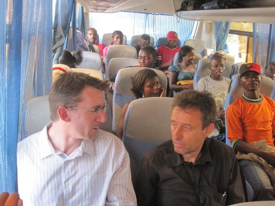
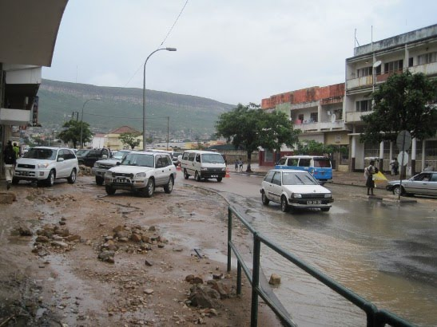

Kizua Mwangola: Part 12: Lubango
Friday, January 22, 2010
Well, Lubango was certainly an adventure. We convinced Silvano and Jonathan that the bus was the most sensible option to get there and back — on the vague advice from Lau that the roads from Benguela to Lubango weren't too bad, 50-100 km's or so of picada. I didn't think that they would really take us up on that offer; one tends to associate important reporters with five-star hotels, chauffeurs and all that. Turns out they were actually keen on going to Lubango by bus, to experience the real Angola rather than the sheltered one. It makes sense, I guess. After all, these are guys that have been covering African cups for a long time and are used to the, how shall I put it, vagaries of African travel. So by bus we went.

Figure 1: Jonathan and Silvano. (c) Shahinara Craveiro
By the standards of most of our trips, this bus journey was remarkable for its non-eventfulness. No flat tires, no drunken passengers, not that many chickens on board, not that many passengers picked up en route, buses roughly on time, roads not too bad — it was as if the Angolan transport system knew they were carrying reporters and wanted to behave.
We got to Lubango at around 14:00, and were greeted by nasty weather. After enjoying a constant stream of hot, cloudless days, it was a real shock to see rain and — gasp — feel the cold.

Figure 2: Main road in Lubango. (c) Shahinara Craveiro
Luckily we were promptly picked up by Remidor, our contact in town. In fact, he proved to be a really valuable resource and — surprisingly for Angola — a stickler for time (if you need a driver in Lubango, give me a shout and I'll send you his number). Remidor took us to a couple of hotels, but the whole town appeared to be booked. After much searching, there were only two rooms to be found: a posh one at Hotel Amigo and a crap one at Hotel Diocema — and by crap I mean crap; it would have been a 5-10 USD one in Thailand but in our lovely Angola it was going for just over 50 USD. To add some excitement to the occasion me and Shahin picked the short straw and got Diocema.
The rest of our stay was a story of rain, more rain and then some real thunderstorms. I even managed to get a really bad cold on the process, something unthinkable in Benguela. On the plus side, the games were pretty good, in particular the Cameroon v Tunisia. This was a fantastic game, if I ever saw one, even including the horrendous defensive mistakes by Cameroon; the fact that the whole group was being decided on a minute-by-minute basis added even more excitement to the equation, so much so that by the end even the professionals were somewhat confused as to who had actually qualified and which team had won the group. In the end, Zambia and Cameroon qualified, giving us an exciting Egypt v Cameroon here in Benguela.
Figure 3: Nigeria's Peter Odemwimgie. (c) Shahinara Craveiro
The other interesting highlight of Lubango, and one which I hope to pursue in the future, is the huge white Angolan community down there. Not only are there the well-do types, but there is also a down-and-out white Angolan community, something which I had never seen in my life. For instance, I saw a white Angolan living in the bairro and carrying her young child on her back, just like a black Angolan woman would do. I couldn't believe my eyes so I got Remidor to confirm this for me — no, it wasn't a really light-skinned mulatto but a real white Angolan. Apparently this is a common sight in the bairros of Lubango.
Update: Jonathan has also posted about this trip, just not quite as eloquently as me :-) Also, ignore the terrible headline ("In a haunting account", "encountering remnants of war and weak bladders" etc) — just another great display of terrible sub-editing (e.g., not his fault). Just read the whole thing.
| Back to previous chapter | Back to chapter index. | Forward to next chapter |